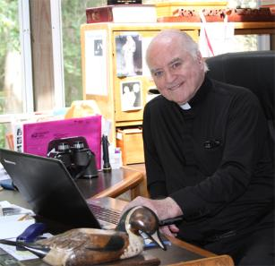

Why I have a Website . . .
The purpose of St. Jude Media Ministry is to spread joy to
people all over the world through various media outlets --
utilizing radio, television, books, print, DVDs, the internet,
this web site and social media including Facebook and
Twitter. The ministry is based on John 15:11 in which Jesus
says, "I have said these things that your joy may be full."
St. Jude Media Ministry: Our Purpose
We embrace love as our supreme goal, recognizing the fact that love
always leads to service and eventually to the cross. Being joyful in spite
of the pain of life is part of the discipline of love. It begins with, and is
sustained by, Jesus who becomes our life and our joy. This
transformation in Christ begins with the will to bear discomfort and
becomes the basis of our perseverance.
I invite you now to become true Messengers of Joy. Share this site and
some of the videos or audio CD's with your family and friends.
Invite them to visit my Facebook page, my daily blog or other areas which
might give them a lift. Then, do your part by being joy for others in your
relationships, in your family, at work, wherever you are -- make a
difference and spread the love of the Lord with joy.
Become a Messenger of Joy!
This website provides a place where we can offer encouragement to you and
other friends with videos, audio clips or articles. I am retired from full-time,
active ministry -- but there are always ways to continue giving and sharing the
love of our Lord and his Church. Wherever we are in this world -- at home, at
work, in a nursing home, in the hospital, working in the missions or on vacation --
we can spread the love of God simply and with joy!
Watch here for future articles!
Please click the links below to read some of Fr. John Catoir's recent articles. More will be added
later, so please check back at this website.

We've all been inspired by the visit of our
beloved Pope Francis -- and his words of
love for each of us. He gave so much
encouragement to average people, like you
and I, all along his various routes, at the
prison, at a school, eating with the poor at a
soup kitchen, picking up babies and giving
hugs freely to people of all races and creeds!
I invite you now, my brothers and sisters, to
become messengers of joy, and cultivate
within yourselves the will to emphasize joy
over sorrow in your daily life.
_____________________________________________________________________